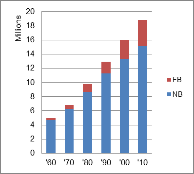

The foreign-born (FB) population increased from 272,161 in 1960 to 3,658,043 in 2010. That was an increase of 1244.1 percent. The foreign-born share changed from 5.5 percent to 19.5 percent.
The share of the overall population that was native-born (NB) increased by 223.6 percent.
Florida: Population 1960-2010 
The first chart below shows the three population change factors for three periods adjusted for annual average amounts. All three factors contributed to population growth for all three periods, but NDM was the major factor until the most recent period.
The second chart shows the same data but with an adjustment to reflect births to immigrants shifted to NIM. In it, NIM became the dominant contributor to population increase in the two most recent periods, while B-D became negative as deaths among the native-born exceeded births.
Florida: Sources of Population Change 1990-2013 Florida: Sources of Population Change (Adjusted) 1990-2013
B-D NDM NIM B-D NDM NIM 90-'99 19.0% 51.3% 29.6% 90-'99 0.9% 51.3% 47.8% 00-'09 19.1% 47.1% 33.9% 00-'09 -2.6% 47.1% 55.6% 10-'13 16.4% 41.6% 42.0% 10-'13 -10.7% 41.6% 69.1%